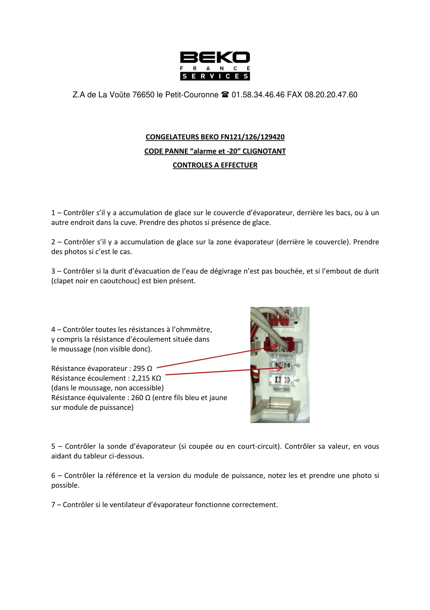
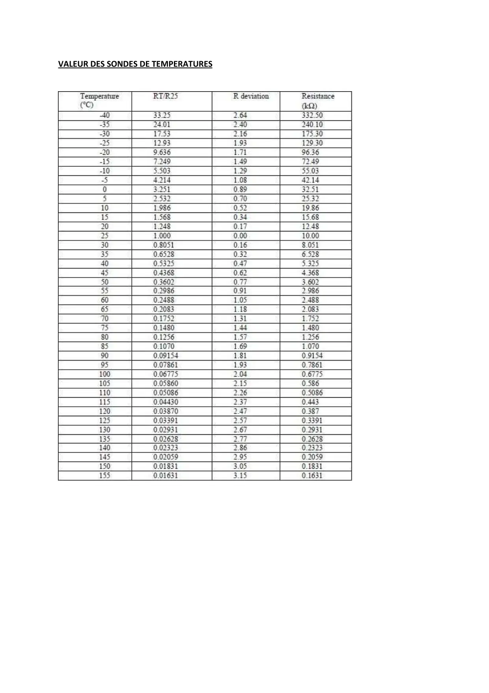

Alarme ! et -20 contrôles

Z.A de La Voûte 76650 le Petit-Couronne 01.58.34.46.46 FAX 08.20.20.47.60CONGELATEURS BEKO FN121/126/129420CODE PANNE “alarme et -20” CLIGNOTANTCONTROLES A EFFECTUER1 – Contrôler s’il y a accumulation de glace sur le couvercle d’évaporateur, derrière les bacs, ou à unautre endroit dans la cuve. Prendre des photos si présence de glace.2 – Contrôler s’il y a accumulation de glace sur la zone évaporateur (derrière le couvercle). Prendredes photos si c’est le cas.3 – Contrôler si la durit d’évacuation de l’eau de dégivrage n’est pas bouchée, et si l’embout de durit(clapet noir en caoutchouc) est bien présent.4 – Contrôler toutes les résistances à l’ohmmètre,y compris la résistance d’écoulement située dansle moussage (non visible donc).Résistance évaporateur : 295 ΩRésistance écoulement : 2,215 KΩ(dans le moussage, non accessible)Résistance équivalente : 260 Ω (entre fils bleu et jaunesur module de puissance)5 – Contrôler la sonde d’évaporateur (si coupée ou en court-circuit). Contrôler sa valeur, en vousaidant du tableur ci-dessous.6 – Contrôler la référence et la version du module de puissance, notez les et prendre une photo sipossible.7 – Contrôler si le ventilateur d’évaporateur fonctionne correctement.
1 / 2
VALEUR DES SONDES DE TEMPERATURES
2 / 2